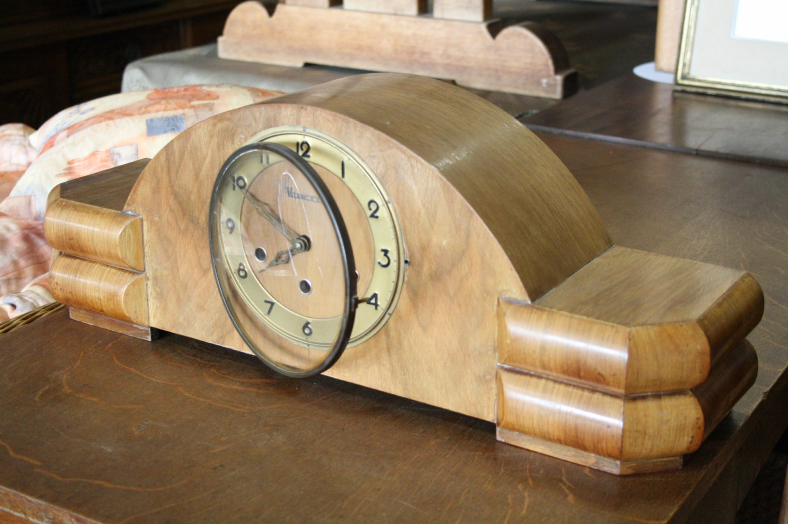
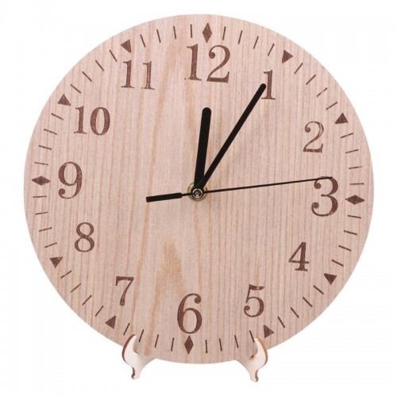

IsmanusisLaikrodis.lt | IŠMANIEJI LAIKRODŽIAI PIGIAU - IŠMANUSIS LAIKRODIS.LT
 Meniu IŠMANIEJI LAIKRODŽIAI SU SIM KORTELE SU ŠIRDIES RITMO MATUOKLIU IŠMANIOSIOS APYRANKĖS Kontaktai
Populiariausi 10,99 € 19,99 €
Išmanusis Laikrodis N1
10,99 € 19,99 € Daugiau Sumažinta kaina! 14,99 € 20,99 €
Išmanioji sportinė apyrankė AE1
14,99 € 20,99 € Daugiau Sumažinta kaina! 23,99 € 29,99 €
Išmanusis laikrodis su SIM kortele S02
23,99 € 29,99 € Daugiau Sumažinta kaina! 19,99 € 24,99 €
Išmanusis laikrodis su SIM kortele S01
19,99 € 24,99 € Daugiau Sumažinta kaina! 149,99 € 164,99 €
Išmanusis laikrodis ANDROID
149,99 € 164,99 € Daugiau Sumažinta kaina! 139,99 € 154,99 €
Išmanusis laikrodis su pulso matuokliu H04
139,99 € 154,99 € Daugiau Sumažinta kaina! 69,99 € 89,99 €
Išmanusis laikrodis H03 su pulso matuokliu
Su širdies pulso matuokliu!IP68 - pilnai atsparus vandeniui!
69,99 € 89,99 € Daugiau Sumažinta kaina! 39,99 € 58,64 €Išmanioji apyrankė su spaudimo matuokliu A04
39,99 € 58,64 € Daugiau Sumažinta kaina! 79,99 € 94,99 €
Išmanusis laikrodis su pulso matuokliu H07
79,99 € 94,99 € Daugiau Sumažinta kaina! 29,99 € 44,99 €
Išmanusis laikrodis su SIM kortele S06
29,99 € 44,99 € Daugiau Sumažinta kaina! 39,99 € 46,99 €
Išmanusis laikrodis su SIM kortele S08
39,99 € 46,99 € Daugiau Sumažinta kaina! 44,99 € 49,99 €
Išmanusis laikrodis su SIM kortele S05
44,99 € 49,99 € Daugiau Sumažinta kaina! 34,99 € 39,99 €
Išmanusis laikrodis su SIM kortele S03
34,99 € 39,99 € Daugiau Sumažinta kaina! 20,99 € 29,99 €
Išmanioji apyrankė su spaudimo matuokliu A03
20,99 € 29,99 € Daugiau Sumažinta kaina! 19,99 € 24,99 €
Išmanioji sportinė apyrankė A02
19,99 € 24,99 € Daugiau Sumažinta kaina! 49,99 € 64,99 €
Išmanusis laikrodis su SIM kortele S10
49,99 € 64,99 € Daugiau Sumažinta kaina! 29,99 € 34,99 €
Išmanusis laikrodis su SIM kortele S04
29,99 € 34,99 € Daugiau Sumažinta kaina! 49,99 € 59,99 €
Išmanusis laikrodis su pulso ir spaudimo...
49,99 € 59,99 € Daugiau Sumažinta kaina! 30,99 € 44,99 €
Išmanusis laikrodis su SIM kortele S07
30,99 € 44,99 € Daugiau Sumažinta kaina! 29,99 € 49,99 €
Išmanioji apyrankė su spaudimo matuokliu...
29,99 € 49,99 € Daugiau Sumažinta kaina! 34,99 € 49,99 €
Išmanusis laikrodis su pulso ir spaudimo...
34,99 € 49,99 € Daugiau Sumažinta kaina! 49,99 € 62,99 €
Išmanusis laikrodis su pulso ir spaudimo...
49,99 € 62,99 € Daugiau Sumažinta kaina! 69,99 € 84,99 €
Išmanioji apyrankė su spaudimo matuokliu A06
69,99 € 84,99 € Daugiau Sumažinta kaina! 79,99 € 109,99 €
Išmanioji apyrankė A05 su GPS
79,99 € 109,99 € Daugiau Sumažinta kaina! 135,99 € 159,99 €
Išmanusis laikrodis H10 GPS
135,99 € 159,99 € Daugiau Sumažinta kaina! 149,99 € 169,99 €
Išmanusis laikrodis H11 GPS
149,99 € 169,99 € Daugiau Sumažinta kaina! 44,99 € 54,99 €
Išmanusis laikrodis su SIM kortele S08 PLUS
44,99 € 54,99 € Daugiau Sumažinta kaina! 24,99 € 29,99 €
Išmanioji apyrankė A02 Plius
24,99 € 29,99 € Daugiau Sumažinta kaina! 54,99 € 74,99 €
Išmanusis laikrodis H12
54,99 € 74,99 € Daugiau Sumažinta kaina! 29,99 €
Išmanioji apyrankė E02
29,99 € Daugiau 54,99 € 59,99 €
Išmanusis laikrodis H17 Leather
54,99 € 59,99 € Daugiau Sumažinta kaina! 44,99 € 49,99 €
Išmanusis laikrodis H19
44,99 € 49,99 € Daugiau Sumažinta kaina! 29,99 € 37,99 €
Išmanioji apyrankė A04 Plus
29,99 € 37,99 € Daugiau Sumažinta kaina! 19,99 € 29,99 €
Išmanioji apyrankė su spaudimo matuokliu...
19,99 € 29,99 € Daugiau Sumažinta kaina! 59,99 € 69,99 €
Išmanusis laikrodis su pulso matuokliu HT1
59,99 € 69,99 € Daugiau Sumažinta kaina! 49,99 € 59,99 €
Išmanioji apyrankė su spaudimo matuokliu A08
49,99 € 59,99 € Daugiau Sumažinta kaina! 29,99 € 44,99 €
Išmanusis laikrodis su pulso ir spaudimo...
29,99 € 44,99 € Daugiau Sumažinta kaina! 69,99 € 79,99 €
Išmanusis laikrodis H14 Outdoor
69,99 € 79,99 € Daugiau Sumažinta kaina! 16,99 € 39,99 €
Išmanioji apyrankė su spaudimo matuokliu A07
16,99 € 39,99 € Daugiau Sumažinta kaina! 49,99 € 54,99 €
Išmanusis laikrodis su pulso matuokliu H16
49,99 € 54,99 € Daugiau Sumažinta kaina! 59,99 € 69,99 €
Išmanusis laikrodis su pulso matuokliu HT2
59,99 € 69,99 € Daugiau Sumažinta kaina! 54,99 € 59,99 €
Išmanusis laikrodis H09T
54,99 € 59,99 € Daugiau Sumažinta kaina! 44,99 € 54,99 €
Išmanusis laikrodis H13
44,99 € 54,99 € Daugiau Sumažinta kaina! 49,99 € 59,99 €
Išmanioji apyrankė A11
49,99 € 59,99 € Daugiau Sumažinta kaina! 59,99 € 69,99 €
Išmanusis laikrodis H18 Leather
59,99 € 69,99 € Daugiau Sumažinta kaina! 119,99 € 134,99 €
Išmanusis laikrodis H15 Sport
119,99 € 134,99 € Daugiau Sumažinta kaina!
Sekite mus Facebook'e
Pristatymas
Per kurjerį, per paštą, atsiėmimas Vilniuje, Žemaitės g. 22, Kaune, Studentų g. 3A arba Klaipėdoje, Minijos g. 159.
Telefonai
852335522
Atsiskaitymas
Mokėjimas grynaisiais pinigais mokant kurjeriui į rankas, mokėjimas bankiniu pavedimu.
Išmanūs Laikrodžiai/Apyrankės
Išmanieji laikrodžiai, tai pagalbininkai, bet kokiam žmogui, jie padeda stebėti jūsų savijautą ar planuotis darbotvarke, o gal tai jums ir komunikacijos priemonė.
FacebookSekite mus
Kategorijos
IŠMANIEJI LAIKRODŽIAI SU SIM KORTELE SU ŠIRDIES RITMO MATUOKLIU IŠMANIOSIOS APYRANKĖSInformacija
Pristatymas Apie mus KontaktaiParduotuvės informacija
UAB Urmo grupė, Žemaitės g. 22, Vilnius; Studentų g. 3A, Kaunas; Minijos g. 159, Klaipėdoje Susisiekite dabar: 85 233 5522 El. paštas: info@urmokaina.lt